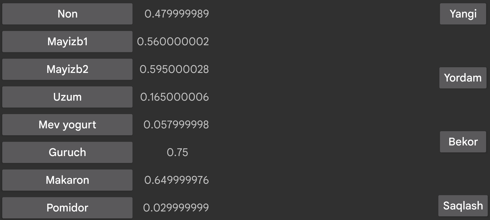

ar be de es fr it nl pl pt ru tr uk uz zh en
Qisqa yo‘llar Kerfstok ichida ishlatilishi mumkin. Soatdagi miqdor kiritish ekranidan qisqa yo‘llar ekraniga o‘tish mumkin, masalan Vivoactive 3 da chapga surish orqali.
Bu ekranda yorliqlar ro‘yxati ko‘rinadi. Yorliqlardan birini bosish miqdor kiritish ekraniga shu qisqa yo‘l qiymatini qo‘yadi. Qiymat oddiy son bo‘lishi mumkin, yoki son bilan birga arifmetik amal ham bo‘lishi mumkin, masalan *0.5 orqali kiritilgan son 0.5 ga ko‘paytiriladi.
Sozlamalardagi shu sahifada qisqa yo‘llarni yaratish, o‘chirish va tahrirlash mumkin.
Mavjud qisqa yo‘llar ro‘yxati chap tomonda ko‘rsatiladi. Ulardan birini bosgach, o‘sha qisqa yo‘lni o‘chirish yoki uning yorlig‘i hamda qiymatini o‘zgartirish mumkin bo‘lgan ko‘rinish ochiladi.
Yangi qisqa yo‘l Yangi tugmasi bilan yaratiladi.
O‘zgarishlar faqat Saqlash tugmasi bosilgandan keyin yozib qo‘yiladi.